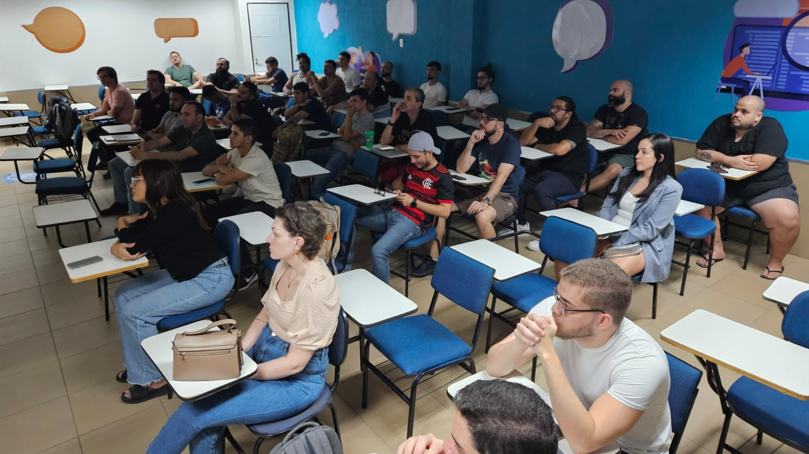
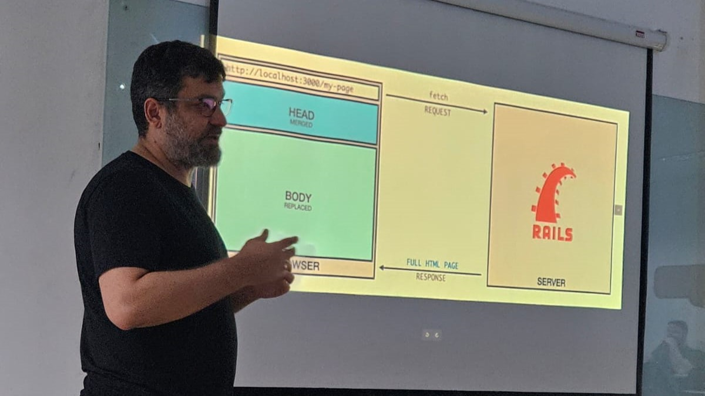
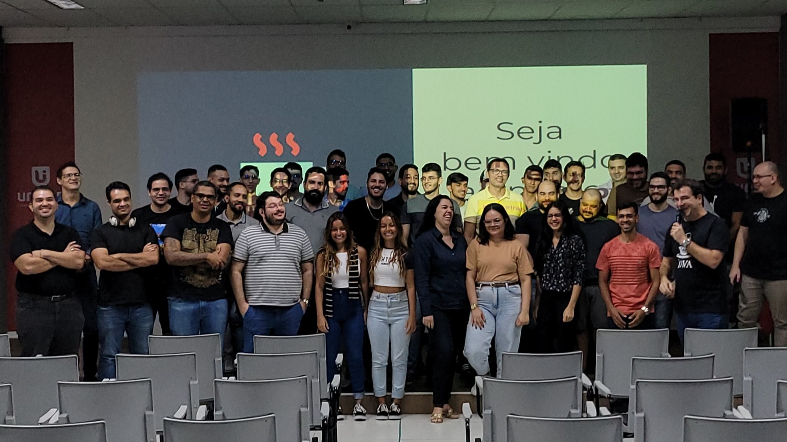
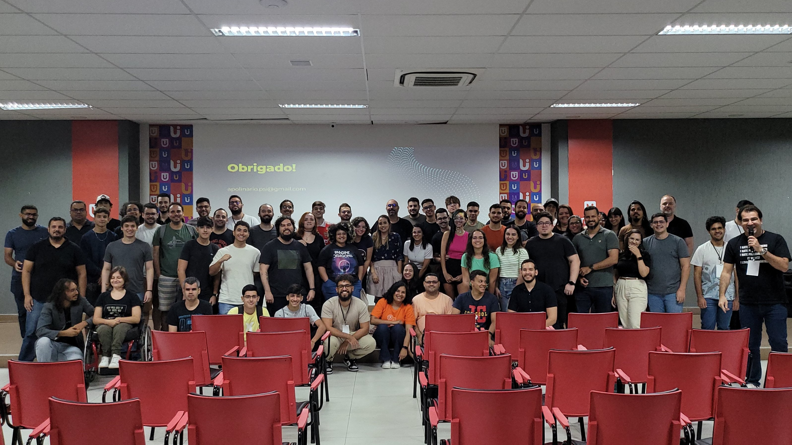
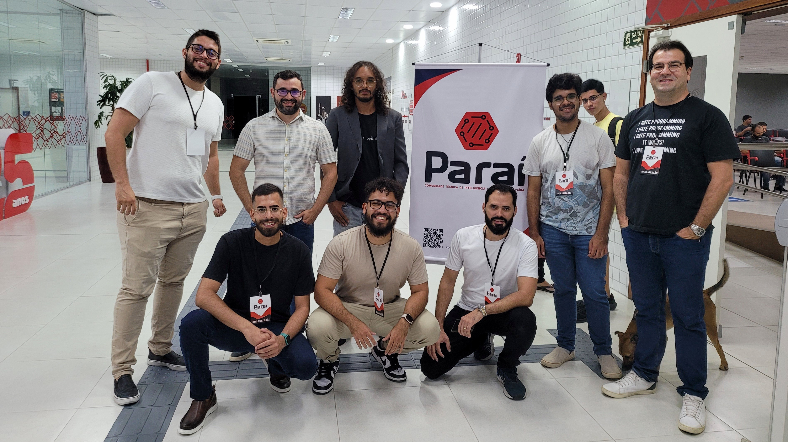
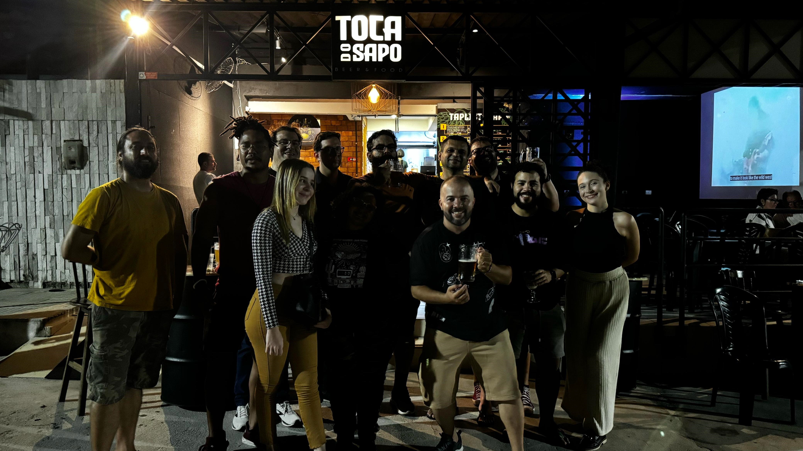
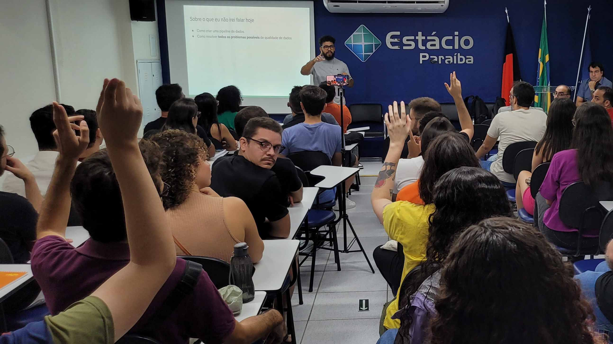
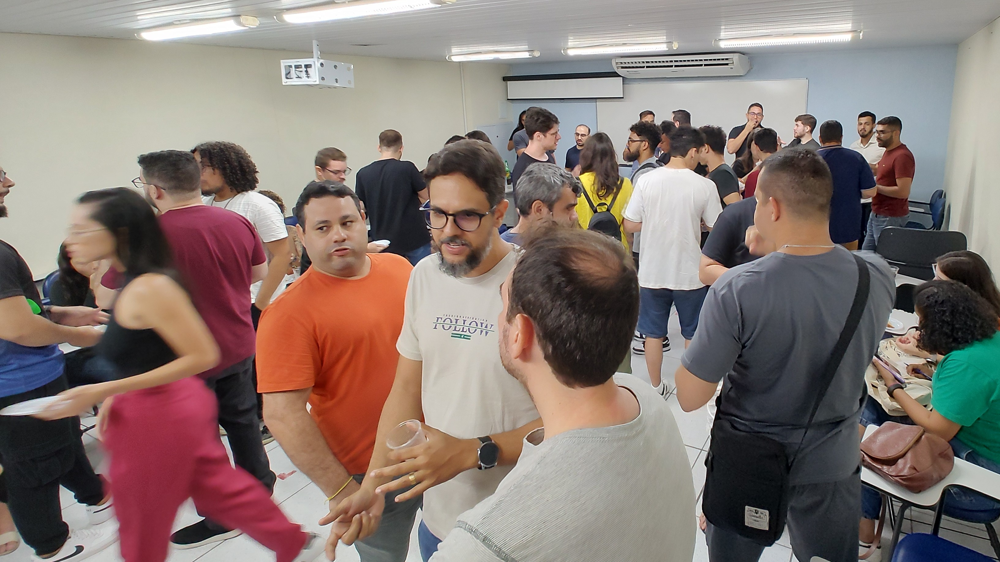

CRUDPB - Comunidade de Devs da Paraíba
Unindo a comunidade de desenvolvedores da Paraíba.
Se você programa, mesmo que eventualmente, e é da Paraíba ou tem negócios nessa região, o CRUDPB é para você!
Junte-se ao CRUDPB agora!Se você esta à procura dos melhores talentos que moram na região ou que podem trabalhar remotamente, então divulge suas vagas no grupo #vagas!
Acesse o grupo #vagas! (grupo 1) Acesse o grupo #vagas! (grupo 2)O CRUDPB (Comunidade
Como funciona?
Cada comunidade participante terá seu próprio grupo no WhatsApp, integrado à comunidade "guarda-chuva" do CRUDPB. Isso garante autonomia para cada grupo, ao mesmo tempo que facilita a comunicação e a interação entre todos os membros. Líderes de cada comunidade serão administradores de seus respectivos grupos e um grupo deles também terão acesso administrativo ao CRUDPB.
Atenção, novo membro!
Devido à alta demanda e limitações do WhatsApp, nem todos os grupos de comunidades estão listados diretamente no nosso grupo principal. Para descobrir e se conectar a TODAS as comunidades que compõem o CRUDPB, por favor, explore a seção "Comunidades: Encontre a sua!". É a melhor forma de encontrar sua turma!
Benefícios para desenvolvedores:
- Conectar-se com outros profissionais: Ampliar sua rede de contatos, trocar ideias e colaborar em projetos.
- Aprender e se desenvolver: Participar de eventos, workshops e palestras sobre as mais diversas tecnologias.
- Manter-se atualizado: Acompanhar as últimas tendências e novidades do mercado de tecnologia.
- Encontrar novas oportunidades: Ter acesso a um canal exclusivo de vagas de emprego (#vagas).
- Fazer parte de algo maior: Contribuir para o crescimento da comunidade de tecnologia da Paraíba.
Benefícios para empresas:
- Ampliar o alcance a profissionais qualificados: Através do grupo #vagas, empresas podem anunciar suas oportunidades para um público amplo e engajado de desenvolvedores.
- Fortalecer sua marca: Participar do CRUDPB demonstra o compromisso da empresa com a comunidade de tecnologia local, atraindo e retendo talentos.
Participe e faça a diferença!
Para que o CRUDPB alcance seu potencial, precisamos da sua participação! Convidamos todos os desenvolvedores e profissionais de tecnologia da Paraíba a se juntarem à sua comunidade dentro do CRUDPB. Juntos, podemos construir um ecossistema de tecnologia ainda mais forte e vibrante em nosso estado.
Click aqui para se juntar ao CRUDPB no WhatsApp.
Não esqueça de entrar nos grupos das comunidades que lhe interessam, e também não deixe de entrar nos 5 grupos abaixo:
- #geral, para comunicações diversas.
- #eventos, para saber de eventos ou publicar os seus.
- #carreira-tech, para discussões focadas em carreira.
- #vagas (grupo 1) ou #vagas (grupo 2) , para saber de vagas ou mesmo publicar algumas.
- #mercado, para venda e compra diversas.